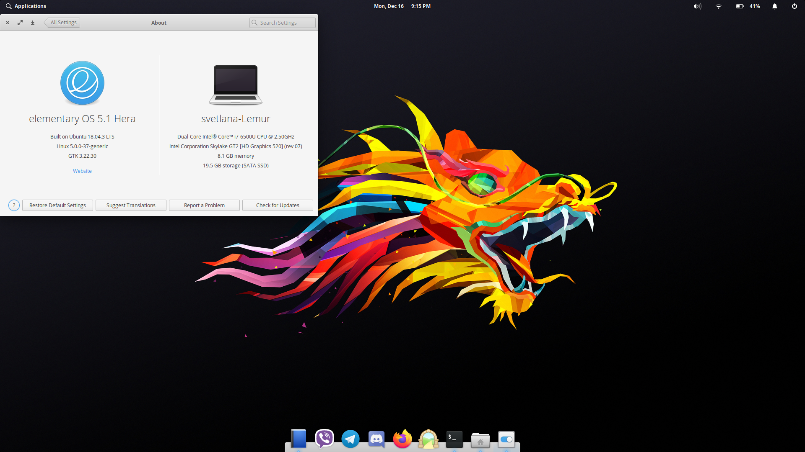
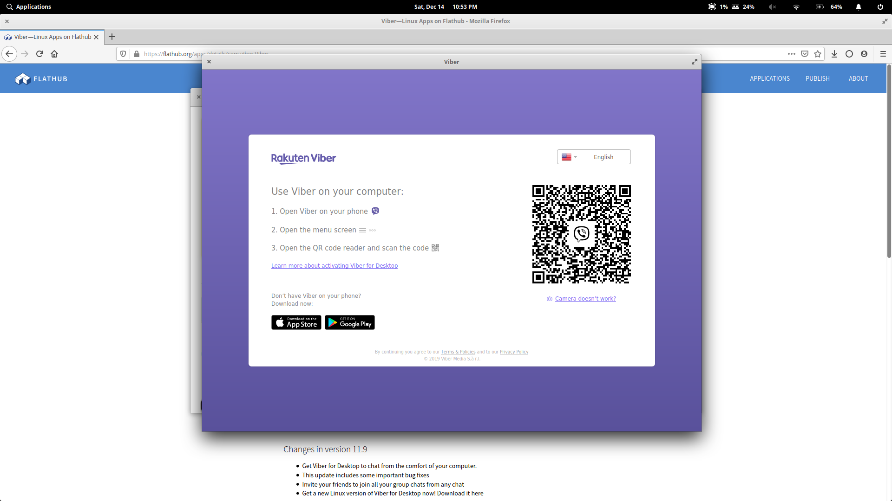
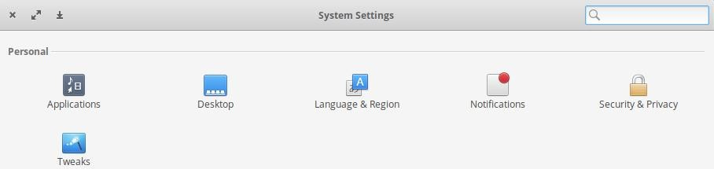

First Look at elementary OS
December 21, 2019 I'm writing a new blog post about elementary OS after few days use. This blog post is simply the first look at the OS after an hour of use.
Over the last decade, I noticed that I became a minimalist from really wanting to customize and have eye-candy. It's either that I matured from the awkward pre-teen and teen years or my thinking changed organically. But it's for the good of things as I noticed that I do tend to over think and over complicate my work flow. I also started to dislike Ubuntu over the last year or so. Recently, one of the YouTubers that follow, Schykle, posted a review on the most recent release of elementary OS, 5.1 codenamed Hera. That video alone made want to try it out which I did. After a hour of using it, I fell in love of it and installed it with no issues- even though I never have installation issues, I tend to have issues from updates. I will talk about it and share my top five apps.
Review of elementary OS
elementary OS is prefect for those who are minimalists. It's very elegant and simple to use, maybe a bit too simple and minimal for my tastes as I do like to tweak a bit but not as much as some. It will also teach me to use more keyboard shortcuts to pull up apps faster. There are three other cool features that I like but they are already listed on their site. I don't really use those three anyways, expect Picture-in-Picture time to time.

The Good
Redundancy: There is no redundancy of functions like on Ubuntu. One example is software updates. There are two apps were you can do it and two of them are redundant and they are Software Center and Software Updater. In elementary OS, there is only one app: the AppCenter. I think this comes from the removal of using PPA's and just using their repos along with Flatpak allows it.
Flatpaks: Flatpaks are way better than PPA's and the other methods of installing programs/apps because I do certain apps. The main examples are Viber, Telegram, and Discord. At the moment, you can Sideload from Flathub and it only installs on the user account that is logged in.
Just a FYI, Viber from Flatpak works out of the box without that weird Dpi scaling issue on the Snap or the one from the .deb. Here is proof:

Onboarding A.K.A Welcome Screen: It's better than Ubuntu's since it asks you if you want to change settings associated to each of the screens.
The Bad
Restarting/Shut Down Times: I haven't had any issues in shutting down but when I restart, it takes forever. I heard that it's a issue.
Volume Not Updating on Wing Panel: I hope this is a bug and will be fixed soon.
Other Notes
Ubuntu Repos: elementary is built of off Ubuntu which is useful if the app that you need isn't found in the official repos or Flatpak. The main examples, for me, are Firefox, MPV, pip, and the tools that allow me to upload with Nikola.
Tweaking: There isn't that much to tweaking to do expect if you like the power to minimize windows without using the keyboard shortcut super + H or disabling the single click in the file manger. Like in Ubuntu, the tweaks apps needs to be installed. The app on elementary is called elementary-tweaks.
Quoting from the README:
Installation
sudo add-apt-repository ppa:philip.scott/elementary-tweaks sudo apt install elementary-tweaksIf you have never added a PPA on Juno before, you might need to run this command first:
sudo apt install software-properties-commonHow to build
``` sudo apt install libgconf2-dev libpolkit-gobject-1-dev libswitchboard-2.0-dev elementary-sdk meson build --prefix=/usr cd build ninja
sudo ninja install io.elementary.switchboard ```
Then you simply just go into System Settings and the last item in Personal, as below:

Top Five Apps
I do use other apps that in repos like Optimizer, aren't in the repos like youtube-dl, or Flatpak like Viber, but these five are my top. The links are provided in the headers for each app.
From elementary's Repos
Notes-Up
Notes-Up is a (yet another) note-taking app that allows you to keep notes in notebooks with tagging and note linking while you write in markdown with a formatting panel to help and auto-saving! What more to say about how awesome it is! Okay, two more things is you can export to Markdown or PDF and bookmark pages.
Clipped
Clipped is probably the best clipboard manager for Linux ever. The main reason is, when you first start up, it will ask/show what is the keyboard shortcut to pull it up. Mine is Ctrl + Alt + V. This much faster then going to the menu or the system tray to pull up that list. Also, it has unlimited list where you can tell it to remove infrequent used items after certain number of days. I have mine set to it's default seven days. Because there is an unlimited list, you have the power to search through that list. Once you have your item, either from the most recent or from searching, you can either double click to paste or type in a number from 0 - 9. Just remember to down arrow to exit out of the search box if you searched. It will always remember your section for a simple Crtl + V.
The downside to the app is you have no way to pin items.
Gvride
This is an app for Google Drive where it syncs and allows you to always access your Google Drive. That's the reason why I like it.
From Ubuntu's Repos
MPV
MPV serves as a prefect media player where it can use command line to play whatever I want locally or from a server. I mostly use it to watch Twitch and YouTube, and listen to streaming radio; because the metadata stays. Yes, I'm a cheapskate in using it to watch YouTube and Twitch but it uses less processes and it 100% by-passes the ads.
Firefox
My Dad was the one who converted me to FIrefox back in 2004 and I have loved ever since. It just yells Open Source. And it's better then ever with Firefox Sync since there is a problem with the profile from my Ubuntu installation being outdated and I wasn't able to use it. Lucky, I was able to pull everything from the synced profile.